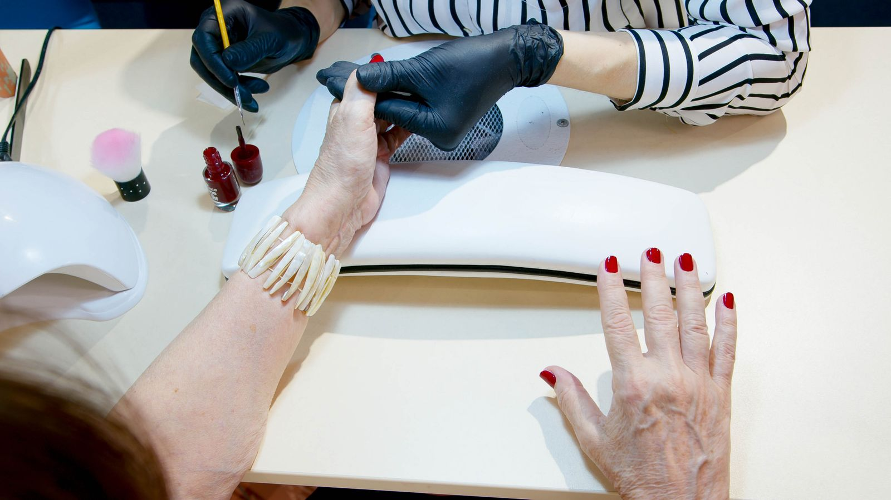
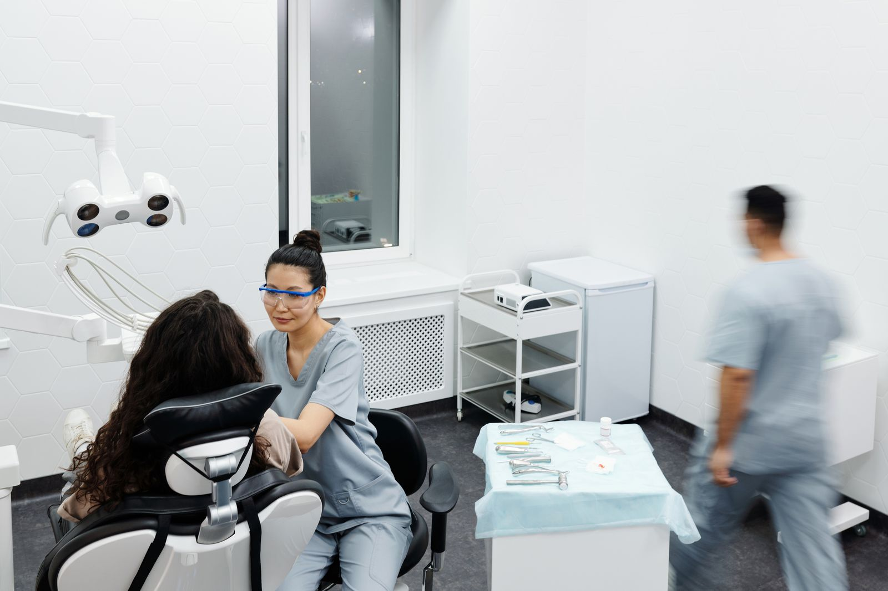

Diseño web
Desde 100 USD- Diagnóstico honesto de tu web actual.
- Web nueva, responsive, lista para publicar.
- WhatsApp y teléfono siempre visibles.
Para spas, clínicas, salones y comercios. Desliza para recorrerlo.
Pide tu diagnóstico SEO gratis
Spas, clínicas, salones y comercios que hacen un buen trabajo, y lo que recibe cada uno.



Déjanos tu nombre, tu web y tu WhatsApp, y te mandamos gratis tu puntuación SEO de 0 a 100 y las 5 correcciones más urgentes, en un PDF.
Pedir mi diagnóstico por WhatsApp